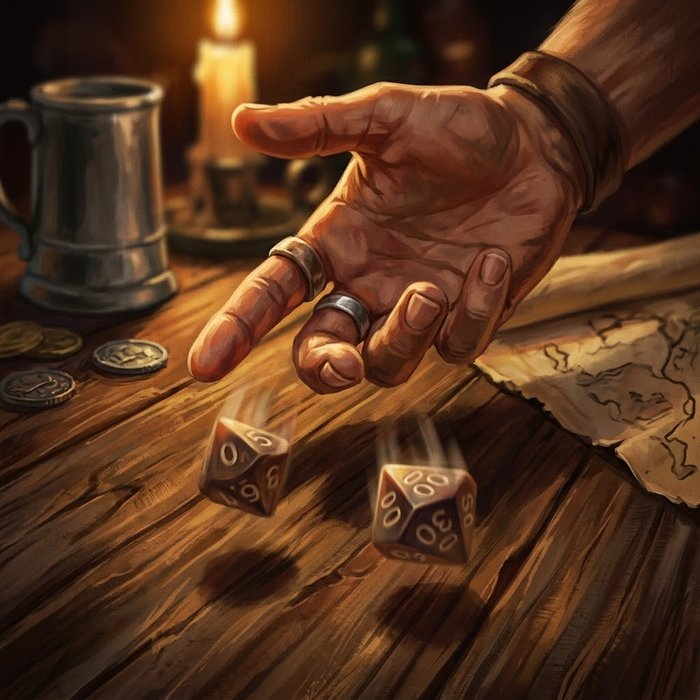

Testes de d100¶
| Resumo rápido | |
|---|---|
| Teste básico | d100 + Atributo vs Dificuldade — igualou ou superou, sucesso |
| Vantagem / Desvantagem | 2d100, fica com o melhor / o pior |
| Limiar de Crítico | Sorte ÷ 3 (arredondado) |
| Rerolagens por descanso longo | 1 + (Sorte ÷ 10) |

Há uma única fórmula no jogo inteiro, e ela resolve tudo — abrir uma fechadura, convencer um guarda, acertar um dragão:
d100 + Atributo vs Dificuldade
Role 1d100 (um par de d10, lido como percentil — 00 conta como 100), some o Atributo apropriado, e compare com a Dificuldade definida pelo Mestre. Igualar ou superar é sucesso.
Rolagens de Habilidade usam exatamente a mesma lógica, trocando a Dificuldade fixa pelo número-alvo do defensor — Evasão pra ataque físico, Fortitude Mágica ou Fortitude Física pra efeito que pula a Evasão, Social ou Exploração pra resistir a influência ou percepção (ver Combate). Igualou ou superou, acertou.
E é só isso que a rolagem responde. O quanto a habilidade faz não depende do dado: depende da Intensidade que o jogador pagou antes de rolar.
Teste de Resistência¶
Toda habilidade declara sua Resolução. Ataque é a fórmula acima — o usuário rola contra o alvo, e é ele quem pode errar. Teste de Resistência inverte a rolagem: o usuário não erra, e é o alvo que corre risco de não aguentar.
Teste de Resistência: o alvo rola, não o usuário
O alvo rola d100 + o atributo que a habilidade declarar, contra o Atributo de lançamento do usuário, cru — a Magia de quem conjura, o Ataque de quem golpeia. Igualou ou superou, resistiu.
São três resultados possíveis, e o do meio é o comum:
| O alvo… | Sofre |
|---|---|
| falhou | o efeito inteiro — dano cheio e todas as condições |
| resistiu | metade do dano, e nenhuma das condições |
| resistiu com Crítico | nada; escapou por completo |
O Crítico não some num Teste de Resistência — ele troca de lado junto com o dado. Quem rola é quem critica, pela mesma regra de sempre: d100 puro igual ou abaixo do próprio limiar. É por isso que habilidade resistida não traz bullet de Crítico na ficha — o momento de sorte pertence a quem está resistindo.
Com que atributo se resiste não depende do elemento, e sim do que o efeito exige do alvo. A habilidade declara o seu no campo Vs, então ninguém precisa julgar isso no meio do turno:
| A pergunta que o efeito faz | Resiste com |
|---|---|
| Dá pra sair da frente? | Agilidade |
| O corpo tem que aguentar? | Defesa |
| A mente tem que aguentar? | Sanidade |
| A vontade está sendo dobrada por voz ou presença? | Social |
| A realidade em volta está sendo alterada? | Magia |
Repare que resistir a uma explosão usa Agilidade crua, não Evasão — a Couraça da armadura não ajuda ninguém a se jogar pro lado.
Quando cada resolução se usa. Ataque é pra golpe ou magia mirada em um alvo, que um passo pro lado evita. Teste de Resistência cobre três casos:
- Área — a explosão não mira ninguém: ela acontece, e quem está lá se protege como pode.
- O que o corpo resiste por dentro — veneno de ação lenta, maldição plantada, algo que só dispara depois.
- O que não se esquiva, porque não vem por uma trajetória — dobra do espaço, gravidade, sucção dimensional.
A diferença não é cosmética: é sobre de quem é a incerteza, e sobre quem tem o que fazer quando a habilidade cai na mesa. Uma área do Mestre contra o grupo inteiro vira quatro jogadores rolando a própria resistência, em vez do Mestre rolando quatro vezes sozinho.
Quando rolar¶
Só quando a ação puder dar errado e o fracasso for interessante. Se o personagem tem tempo, ferramenta e nenhuma pressão, a ação simplesmente acontece — ver Quando não pedir teste.
A escala de Dificuldades que o Mestre usa está na tabela de Dificuldades. Como referência rápida: Dificuldade 50 é o que uma pessoa treinada faz na maior parte das vezes, Dificuldade 75 exige competência real, Dificuldade 100 é façanha.
Vantagem e Desvantagem¶
Vantagem — Role 2d100 e use o melhor. Fontes múltiplas de Vantagem não acumulam — rola-se 2d100 uma vez só.
Desvantagem — Role 2d100 e use o pior. Também não acumula. Se uma mesma rolagem tiver Vantagem e Desvantagem ao mesmo tempo (de qualquer quantidade de fontes), elas se cancelam e rola-se 1d100 normal. Quando o Mestre concede uma e quando concede a outra está em Vantagem, Desvantagem e rerrolagem.
Na prática: role 2d100 e fique com o maior (Vantagem) ou o menor (Desvantagem). O Crítico só checa o dado que você manteve.
Críticos¶
Não existe mais "20 natural" — o crítico escala com Sorte, através do limiar de Crítico:
Limiar de Crítico = Sorte ÷ 3, arredondado
Se o resultado do d100 (o número puro, antes de somar Atributo) for igual ou menor que o seu limiar, o teste é sucesso automático e crítico — não importa a Dificuldade. Um crítico causa dano máximo, uma rolagem de dano extra, e sobe 1 Intensidade de graça.
Como todo atributo nasce em 5 na criação, o limiar nunca é zero: todo personagem mantém pelo menos 1% de chance de crítico garantido, mesmo sem nunca investir em Sorte. Quem foca Sorte a sério chega a limiares de 20, 30, ou mais — cada vez mais perto de "sempre acerto, e sempre bem".
Tirar exatamente 1 no d100, em qualquer teste, marca 1 ponto de Estresse — mesmo quando o resultado é sucesso/crítico (o susto de escapar por pouco cobra um preço, mesmo quando a sorte salva você).
Não existe falha crítica ("fumble") neste sistema: uma falha é só uma falha.
Rerolagens¶
O jogador pode rerolar qualquer teste seu que tenha falhado, ou um efeito usado contra si — não dá pra rerolar um sucesso só pra tentar upar em crítico.
Usos por descanso longo = 1 + (Sorte ÷ 10), arredondado (mínimo 1). A grade reseta completamente a cada descanso longo.
É a válvula de escape do sistema: um teste ruim na hora errada não precisa ser o fim, desde que você ainda tenha carga.
Testes Sociais¶
Persuadir, Intimidar, Amedrontar — resolvidos como teste normal, usando Social.
A diferença é que um teste social tem alvo, não Dificuldade fixa: a dificuldade sai do Social de quem está sendo convencido (ou da Fortitude Mágica, se o efeito for de origem mágica — ver Combate), e do quanto o pedido custa a ele. Ver Testes Sociais têm alvo, não Dificuldade fixa.
Nenhum teste social força um PJ a nada — contra jogadores, o resultado informa a cena, não a decisão.
Testes em grupo¶
Quando o grupo inteiro tenta a mesma coisa (atravessar o desfiladeiro, passar despercebido), o Mestre escolhe uma das quatro formas de resolver, conforme a ficção — ver Testes em grupo.